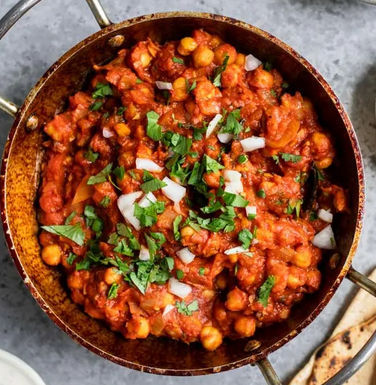

Ingredients
–
- 1 tbsp avocado oil
- 1 tbsp butter
- 1 1/2 onions, finely diced (2 cups)
- 4 cloves garlic, minced
- 1 tsp minced ginger
- 2 green cardamon pods
- 2 whole cloves
- 1 cinnamon stick
- 1 bay leaf
- 1 tsp ground coriander
- 1/2 tsp ground cayenne
- 1 tsp red chili powder
- 1/2 tsp garam masala
- 1/4 tsp turmeric
- 1/4 tsp black pepper
- 1 1/2 tsp salt to taste
- 28oz can chickpeas, drained and rinsed
- 26oz can crushed tomatoes
–
- put a large pot onto the stove at medium high heat and add the oil and butter.
- add in the onions and cook for 30-40 minutes, stirring often, until caramelized.
- make a sachet with the whole spices and add to the pot.
- add garlic and ginger and cook for 1-2 minutes, stirring constantly to avoid burning.
- add the ground spices, salt, and pepper, and cook for about 30 more seconds.
- add crushed tomatoes, and cook until the oil separates from the tomatoes, about 15-20 minutes.
- add chickpeas and cook until the chickpeas have softened, about 5-10 more minutes.
- serve with turmeric rice.